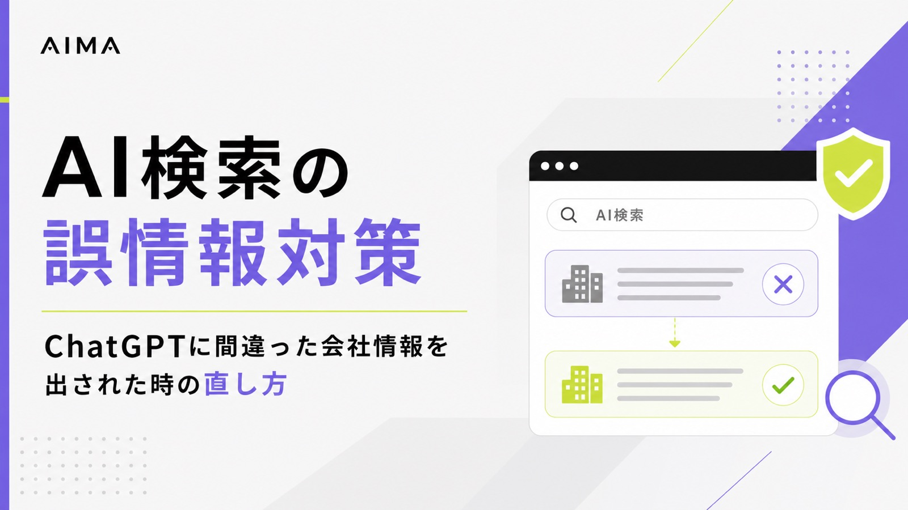
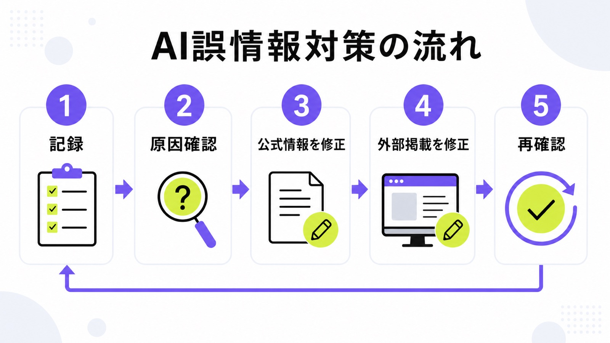
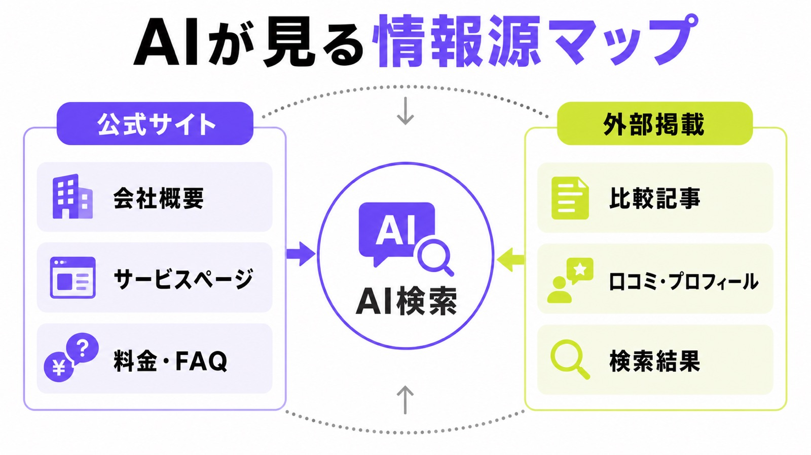
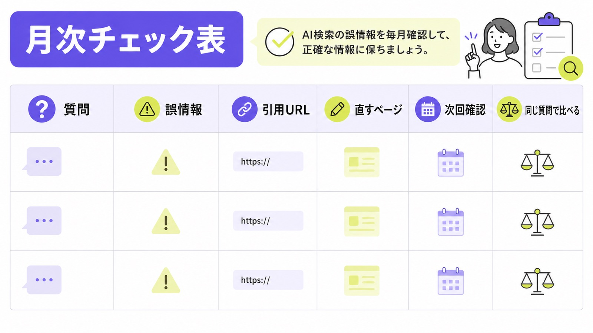

AI検索の誤情報対策｜ChatGPTに間違った会社情報を出された時の直し方

ChatGPTやGeminiで自社名を聞いたとき、古い住所、違う料金、終わったサービス、別会社と混ざった説明が出ることがあります。これを放置すると、問い合わせ前の人が不安になり、正しい比較候補から外れることがあります。
AI検索の誤情報対策では、まず「どのAIで、どんな質問をしたら、何が間違って出たか」を記録します。そのうえで、公式サイト、Googleビジネスプロフィール、比較サイト、外部プロフィールを順番に直します。AI検索全体の見え方は、AI検索の競合分析やLLMOモニタリングと一緒に見ると整理しやすくなります。
この記事では、シート候補の「自社/外部掲載の修正順を出す」という切り口に沿って、専門担当者がいなくても始められる直し方を、できるだけ簡単な言葉で説明します。
目次

AI検索の誤情報対策とは
AI検索の誤情報対策とは、ChatGPT、Gemini、Perplexity、Google AI Overviewsなどで出た間違った会社情報を見つけ、AIが参照しやすい場所に正しい情報を増やし、同じ質問で再確認する作業です。
AIが間違える原因は情報不足か古い情報
AIが会社情報を間違えるときは、たいてい公式サイトだけでなく、古い外部掲載、比較記事、求人ページ、SNSプロフィール、口コミサイトなどの情報が混ざっています。公式サイトに料金や対応範囲が書かれていないと、AIは別のページから補おうとします。だから最初に見るべきなのは、AIそのものではなく、Web上に古い情報が残っている場所です。
たとえば、住所移転、代表者変更、料金改定、サービス名変更、対応地域の変更は、AI回答でズレやすい項目です。人間なら「たぶん古い情報だ」と気づけても、AI回答だけを見た見込み客は不安になります。誤情報対策は、AIを責める作業ではなく、AIにも人にも分かる根拠を増やす作業だと考えると進めやすくなります。
まず感情的に反論せず、証拠を残す
間違った回答を見つけると、すぐに消したくなります。ただ、最初にやるべきことは削除依頼ではなく記録です。いつ、どのAIで、どんな質問をして、どんな誤情報が出たのかを残します。可能ならスクリーンショット、回答文、引用URL、正しい情報のURLを一緒に残してください。あとで直す順番を決めるには、同じ条件で記録することが大切です。
AI回答は同じ質問でも変わることがあります。そのため、一度見た誤情報だけで判断すると、原因を外すことがあります。会社名、サービス名、料金、地域、代表者名、競合名を組み合わせて、2〜3パターンの質問で確認しましょう。記録があれば、社内説明や外部パートナーへの相談もしやすくなります。
“There are no additional requirements to appear”

AIに間違った会社情報を出された時の確認手順
誤情報対策では、先に「どこが間違いか」を小さく分けます。料金なのか、所在地なのか、サービス範囲なのか、競合との混同なのかで直すページが変わるためです。ここでは、最初の確認を3段階に分けます。
会社名・料金・住所・サービス範囲を表にする
まず、AI回答に出た情報をそのまま表に写します。会社名、住所、代表者名、電話番号、料金、契約期間、対応地域、サービス内容、実績、比較された競合名を列にしてください。その横に「正しい情報」と「正しい情報が載っているURL」を入れます。すると、どの誤りが重大か、どこを直せばよいかが見えます。最初は間違われやすい項目だけで十分です。
表にすると、誤情報が1つだけなのか、複数の場所で同じ間違いが出ているのかを分けられます。たとえば料金だけが古いなら料金ページを直します。サービス範囲が違うならサービスページとFAQを直します。別会社と混同されているなら、会社概要と代表者プロフィールを厚くします。
ChatGPT・Gemini・Perplexity・AI Overviewsで同じ質問を試す
1つのAIだけで判断しないでください。ChatGPTでは正しくても、Geminiでは古い情報が出ることがあります。反対に、AI Overviewsでは公式ページが使われているのに、別のAIでは比較サイトが使われることもあります。同じ質問を主要AIに入れて、回答本文、引用URL、会社名、間違いの種類を横に並べます。見るべきなのは、AIごとの癖より先に同じ質問で横並びにした差です。
質問文は、見込み客が実際に聞きそうな形にします。「株式会社○○の料金は？」「○○はどんな会社？」「○○と△△の違いは？」「大阪でAI検索対策を頼むなら？」のように、会社名、料金、比較、地域を分けます。毎回質問文を変えると結果を比べにくいので、月次確認では同じ質問を使い続けましょう。
引用URLと外部掲載ページを確認する
AI回答に引用URLがある場合は、そのページを開いて内容を確認します。古い料金、古い住所、昔のサービス名、終了したキャンペーン、別会社の情報が載っていないかを見ます。引用URLが出ない場合でも、検索結果上位、Googleビジネスプロフィール、比較サイト、求人媒体、プレスリリース、取材記事を確認します。原因を探す時は、どこから来た誤りかを見ることが近道です。
修正できる外部ページなら、管理画面や問い合わせ窓口から直します。自分では直せない記事や比較ページなら、公式サイト側に正しい説明を追加して、AIが公式情報を読み取りやすい状態にします。外部掲載を全部消す必要はありません。大事なのは、古い情報より強く、分かりやすい公式情報を用意することです。
| 確認する場所 | よくある誤り | 最初に直すページ |
|---|---|---|
| 会社概要 | 住所、代表者名、設立年、事業内容 | 会社概要、代表プロフィール |
| サービス情報 | 料金、契約期間、対応範囲、提供内容 | サービスページ、料金ページ、FAQ |
| 外部掲載 | 古いプロフィール、過去のプラン、比較記事の誤記 | Googleビジネスプロフィール、比較サイト、取材記事 |
| AI回答 | 競合との混同、根拠URLのズレ、古い情報の再利用 | 引用元ページ、公式の補足ページ |
公式サイト側で直すべき場所
AI検索の誤情報を減らすには、公式サイトを「正しい情報の置き場所」にする必要があります。会社概要、サービス、料金、FAQ、実績が薄いと、AIは外部情報に頼りやすくなります。
会社概要とサービスページに正しい情報を明記する
会社概要には、正式社名、所在地、代表者、事業内容、問い合わせ先、運営サービスを明記します。サービスページには、誰向けのサービスか、何をするのか、何をしないのか、どの地域や業種に対応するのかを書きます。抽象的な文章だけでは、AIも人も判断しにくいです。まずは公式ページを一番強い根拠にするつもりで整えましょう。
古い情報と新しい情報が混ざる会社は、ページ同士の矛盾も確認してください。トップページでは「月額5万円」と書いているのに、別ページでは古い料金が残っていると、AIはどちらが正しいか判断しにくくなります。内部リンクで会社概要、サービス、料金、FAQをつなぐと、正しい情報をたどりやすくなります。
料金・契約条件・対応範囲を曖昧にしない
料金や契約条件が曖昧だと、AIは外部記事や競合ページの表現を使って説明することがあります。料金を細かく出せない場合でも、「月額の目安」「初期費用の有無」「最低契約期間」「含まれる作業」「別料金になりやすい作業」を書くと誤解が減ります。AI検索では、きれいな言葉よりAIが比較しやすい材料が役立ちます。
AIMAの場合は、LLMO特化、月額5万円、相談回数の上限なし、記事作成・記事修正込み、最低契約期間なしをはっきり見せることが重要です。このような具体情報があると、AIが「高額なコンサル会社」と誤って説明するリスクを下げられます。中小企業ほど、料金と範囲を分かりやすく出すほうが安心につながります。
FAQで間違われやすい質問を先回りする
FAQは、AI検索の誤情報対策と相性がよい場所です。「料金はいくらですか？」「最低契約期間はありますか？」「記事作成も含まれますか？」「SEO会社との違いは何ですか？」のように、間違われやすい質問へ短く答えます。AIに説明してほしい内容を、公式サイト側で先回りして答えるイメージです。
ただし、FAQを増やすだけでは足りません。回答の中から、料金ページ、事例、会社概要、問い合わせ導線へ自然にリンクしましょう。FAQだけが孤立していると、読んだ人は次の行動に進めません。AIにも人にも分かるように、質問、答え、詳しいページをつなぐことが大切です。技術面の整え方はFAQPage構造化データの実装方法でも詳しく解説しています。
“Google Search finds and processes your pages”
出典：Google Search Central「Optimizing your website for generative AI features on Google Search」

外部掲載とAI回答の見え方を直す
公式サイトを直したら、次に外部掲載を確認します。AI検索では、公式サイト以外の情報も回答の材料になります。古い外部情報を放置すると、公式サイトを直しても誤情報が残ることがあります。
Googleビジネスプロフィールや比較サイトの古い情報を直す
店舗、士業、クリニック、地域サービスでは、Googleビジネスプロフィールの住所、営業時間、電話番号、カテゴリ、サービス説明を確認します。BtoB企業でも、比較サイト、制作実績ページ、求人媒体、プレスリリース、登壇プロフィール、代表者プロフィールに古い情報が残ることがあります。AIが拾いやすい外部の古い情報から順番に直しましょう。
外部掲載は、全部を一気に直そうとすると大変です。まずは、AI回答の引用元、検索上位に出るページ、問い合わせ前に見られやすいページを優先してください。管理画面がある媒体は自社で修正し、管理できない媒体は問い合わせフォームから修正依頼を出します。依頼文には、誤っている箇所、正しい情報、公式URLを短く書くと伝わりやすくなります。
修正できない外部情報は公式ページで打ち消す
古い記事や第三者サイトは、すぐに直せないこともあります。その場合は、無理に削除だけを狙わず、公式サイト側で正しい説明を厚くします。たとえば「現在の料金」「現在の対応地域」「旧サービス名との違い」「終了したプラン」を公式FAQに書きます。直せない外部情報があるほど、公式側で正しい説明を厚くすることが大切です。
古い情報を否定するだけではなく、現在の情報を分かりやすく出すのがポイントです。「以前はAプランでしたが、現在はBプランです」「旧サービス名は○○で、現在は△△に統合しています」のように書くと、人間にもAIにも伝わりやすくなります。履歴を隠すより、現在の状態を明確にしたほうが混乱を減らせます。
直した後は毎月同じ質問で再確認する
公式サイトや外部掲載を直しても、AI回答がすぐ変わるとは限りません。検索結果の更新、AI側の取得タイミング、質問文の違いによって時間差があります。そのため、修正後は1週間後、1か月後、3か月後のように確認日を決めます。毎回質問を変えると判断できないので、同じ質問で再確認してください。
確認表には、質問、AI名、誤情報、引用URL、直したページ、次回確認日を入れます。正しくなった回答も残しておくと、どの修正が効いたのかを見返せます。AI検索対策は、一回の修正で終わりではありません。毎月少しずつ情報を正し、古い情報が増えない状態を作ることが大切です。
“OAI-SearchBot is used to surface websites”

AIMAなら誤情報の発見から修正まで伴走できる
AI検索の誤情報対策は、調査だけでは終わりません。正しい情報をどのページに足すか、外部掲載をどう直すか、次回どう確認するかまで決める必要があります。AIMAでは、この一連の作業を小さく回します。
月5万円で調査・記事修正・FAQ追加まで進める
AIMAは、LLMOに特化した支援を月額5万円で提供しています。AI回答の確認、誤情報の記録、会社概要やサービスページの修正案、FAQ追加、記事作成、既存記事の修正まで、毎月できる範囲で進めます。高額な診断だけで止めず、見つけた誤りをすぐ直すことを重視しています。
たとえば、AIに料金を高く説明された場合は料金ページとFAQを直します。別会社と混同された場合は会社概要、代表者情報、サービス説明を強くします。古い外部掲載が原因なら、修正依頼文や公式側の補足ページを用意します。専門担当者がいない会社でも、毎月少しずつ正しい情報を増やせる形にします。
相談回数の上限なしで細かい誤情報も相談できる
AI検索の誤情報は、小さな違いから始まります。「料金が少し違う」「対応地域が狭く見える」「別サービスと混ざっている」「古い実績だけが出る」といった違和感を放置すると、あとで大きな誤解につながります。AIMAは相談回数の上限がないため、小さな違和感を早く潰す運用に向いています。
最低契約期間もないため、まずは数か月だけ誤情報の確認と修正を試すこともできます。自社がAI検索でどう見えているか知りたい場合は、無料LLMO診断から始めてください。AI検索の流入や問い合わせまで見たい場合は、AI検索からの流入を計測する方法も参考になります。
参考：COUNTER株式会社 LLMO/GEO/AISEO対策サービス
AI検索の誤情報対策に関するよくある質問
AIの誤情報は一度直せば完全になくなりますか？
完全にはなくなりません。AI回答は、モデル、検索結果、外部掲載、質問文によって変わります。公式サイトと外部掲載を直したあとも、毎月同じ質問で確認してください。正しくなった回答と、まだ残っている誤情報を分けて見ると、次に直す場所が分かります。
まずどこから直せばいいですか？
最初は公式サイトの基本情報から直します。会社概要、サービスページ、料金、FAQ、問い合わせ導線を整え、そのあとGoogleビジネスプロフィール、比較サイト、求人媒体、古い取材記事などを確認します。自分で直せない外部情報がある場合は、公式FAQや補足ページで現在の正しい情報を明記しましょう。
まとめ
AI検索で間違った会社情報が出たら、まず記録します。どのAIで、どんな質問をして、何が間違っていて、どのURLが根拠になっているかを表にしてください。感覚で直すより、原因を分けたほうが早く進みます。
次に、公式サイト、外部掲載、AI回答の順で直します。会社概要、サービスページ、料金、FAQを整え、古い外部掲載を修正し、毎月同じ質問で再確認します。AI検索の誤情報対策は、一回で終わる作業ではなく、正しい情報を保つ運用です。
AIMAは、LLMO特化、月額5万円、相談無制限、記事作成・修正込み、最低契約期間なしで、誤情報の確認から修正まで支援します。まずは無料LLMO診断またはお問い合わせからご相談ください。